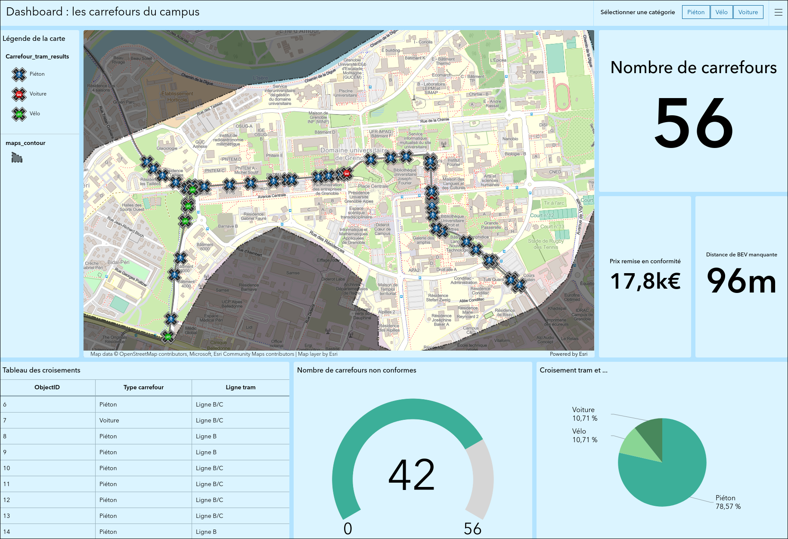
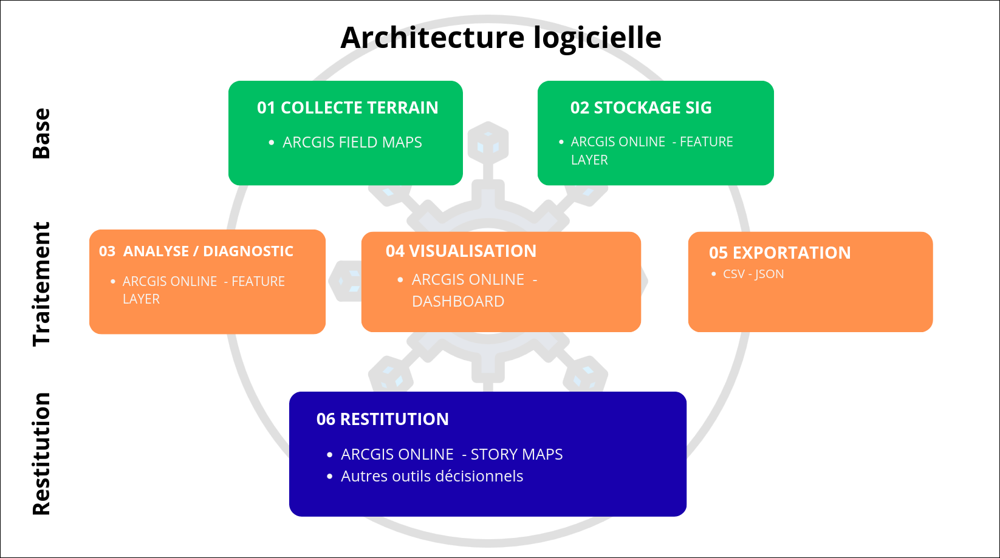
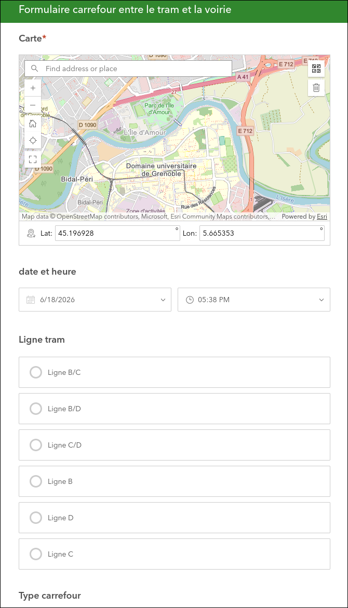

Outil de visualisation géographique & saisie terrain
Conception d'un système SIG complet alliant collecte terrain mobile (Survey123) et restitution cartographique interactive (ArcGIS Online) - du formulaire de saisie jusqu'au tableau de bord en temps réel.
Contexte & objectifs
Cette SAE s'inscrit dans la compétence Valoriser du parcours VCOD. L'enjeu était de concevoir un outil SIG opérationnel permettant à des agents terrain de saisir des données géolocalisées sur mobile, puis de les restituer sous forme de tableau de bord cartographique consultable en temps réel par un décideur. Ce travail a été réalisé sur les intersections entre lignes de tramway et les autres modes de transport, sur tout le campus.
Le projet mobilise à la fois des savoir-faire en modélisation de données spatiales, en ergonomie de formulaire terrain et en data visualisation géographique.
- Concevoir un formulaire Survey123 adapté à une saisie mobile sur le terrain
- Modéliser et publier des couches d'entités spatiales dans ArcGIS Online
- Construire un tableau de bord interactif (filtres, widgets, carte live)
- Documenter le dispositif pour une prise en main autonome
Ce que j'ai fait
Conception du formulaire Survey123 : champs géolocalisés, listes déroulantes contextuelles, validation de saisie et logique de saut conditionnelle.
Création et configuration des couches d'entités dans ArcGIS Online, définition des symbologies thématiques.
Mise en place du tableau de bord : carte en temps réel, widgets de comptage et de filtrage, indicateurs synthétiques pour le suivi décisionnel.
Rédaction de la documentation utilisateur terrain : guide de prise en main pas-à-pas, captures d'écran annotées et présentation au commanditaire.
Captures & livrables



Captures d'écrans issues des produits finaux
Compétences mobilisées
Collecte et structuration de données géolocalisées hétérogènes via un formulaire mobile normalisé.
Restitution cartographique interactive à destination d'un public décideur non-technicien.
Configuration avancée de l'environnement SIG : couches, symbologies, widgets, logique conditionnelle du formulaire.
Bilan & réflexion
Points forts
- Maîtrise rapide de l'environnement Survey123 & ArcGIS Online
- Livrable directement exploitable en conditions réelles
- Documentation claire pour des utilisateurs non-techniciens
Points à améliorer
- Améliorer la symbologie, avec des pictogrammes pertinents
- Réflexion sur les applications de notre travail dans le monde réel